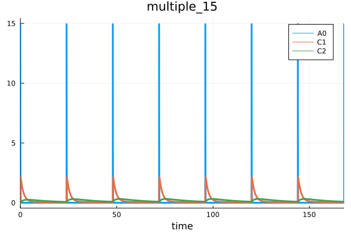

Quick start
The general workflow for HetaSimulator is
- Writing a modeling platform in the Heta format
- Loading platform into Julia environment
- Creating model's settings and data adding scenarios and measurements
- Solve problems using the methods:
sim,mc,fit - Analyze the results
The particular workflow may be iterative, i.e. include updates to the model and re-simulation based on estimated parameters or model structure updates. It depend on the user's needs.
Writing model in the Heta format
Heta is a modeling language for quantitative systems pharmacology and systems biology. It is a DSL (domain-specific language) describing dynamic model or models in process-description format. Heta compiler converts it into variety of files including "Julia" format which can be loaded to Julia/HetaSimulator environment.
HetaSimulator supports all features of the Heta language. So one can organize modeling project as re-used modules (files), include any number of models into single platform with the namespaces mechanism. The platform can use the declaration file platform.json or can be loaded from single file. All Heta modules: Heta code, tables, SBML and JSON can be loaded as a modeling platform and compiled into ODE-based mathematical representation.
To read more about Heta-based modeling platforms and Heta compiler visit the homepage https://hetalang.github.io/#/.
As an example we will use a model describing a simple pharmacokinetic model stored in single .heta file. It is expected that the model code will be placed into "index.heta" file located in a directory my_example or something like that.
// Compartments
Vol0 @Compartment .= 1;
Vol1 @Compartment .= 6.3;
Vol2 @Compartment .= 10.6;
// Species
A0 @Species {compartment: Vol0, isAmount: true, output: true} .= 0;
C1 @Species {compartment: Vol1, output: true} .= 0;
C2 @Species {compartment: Vol2, output: true} .= 0;
// Reactions
v_abs @Reaction {actors: A0 = C1} := kabs * A0;
v_el @Reaction {actors: C1 =} := Vol1 * (kel * C1); // Vol1 * (kmax * C1 / (Km + C1));
v_distr @Reaction {actors: C1 = C2} := Q * (C1 - C2);
// Parameters
dose @Const = 20;
kabs @Const = 20;
kel @Const = 0.5;
Q @Const = 1.0;
// single dose event
sw1 @TimeSwitcher {start: 0};
A0 [sw1]= dose;
// multiple dose event, default off
sw2 @TimeSwitcher {start: 0, period: 24, active: false};
A0 [sw2]= dose;The model describes a typical two-compartment model with single or multiple dose depending on which event is active. Take a note that the component of the model is create without any namespace statement. This means they have the default namespace attribute nameless. This code is equivalent to the following system of ODE.
\[\begin{aligned} &\frac{d}{dt}A_0 = - v_{abs}\\ &\frac{d}{dt}(C_1 \cdot Vol_1) = v_{abs} - v_{el} - v_{distr}\\ &\frac{d}{dt}(C_2 \cdot Vol_2) = v_{distr}\\ \\ &A_0(0) = 0\\ &C_1(0) = 0\\ &C_2(0) = 0\\ &v_{abs}(t) = kabs \cdot A_0\\ &v_{el}(t) = Vol_1 \cdot (kel \cdot C_1)\\ &v_{distr}(t) = Q \cdot (C_1 - C_2)\\ \end{aligned}\\ \\ \text{event at } t = 0\\ \\ A_0 = dose\]
Where parameters are
\[\begin{aligned} &dose = 20\\ &kabs = 10\\ &kel = 0.2\\ &Q = 3.2\\ &Vol_1 = 6.3\\ &Vol_2 = 10.6\\ \end{aligned}\\\]
Loading platform from the Heta format
HetaSimulator loads modeling platform into Platform type object that is a container for all models simulation settings and experimental data. When you load a platform from Heta it includes only models converted from concrete namespaces. The scenario storage is empty and will be populated manually or imported from tables.
Loading with internal compiler
When HetaSimulator is installed and internal Heta compiler is installed the platform can be loaded with the method load_platform.
using HetaSimulator, Plots
p = load_platform("./my_example")No declaration file, running with defaults...
[info] Builder initialized in directory "Y:\my_example".
[info] Compilation of module "index.heta" of type "heta"...
[info] Reading module of type "heta" from file "Y:\my_example\index.heta"...
[info] Setting references in elements, total length 50
[info] Checking for circular references in Records.
[warn] Units checking skipped. To turn it on set "unitsCheck: true" in declaration.
[info] Checking unit's terms.
[warn] "Julia only" mode
[info] Exporting to "Y:\my_example\_julia" of format "Julia"...
Compilation OK!
Loading platform... OK!
Platform with 1 model(s), 0 scenario(s), 0 measurement(s)
Models: nameless
Scenarios: The first argument of load_platform declares the absolute or relative path to the platform directory. If you use another file name (not index.heta) you can declare it with source argument.
p = load_platform("./my_example", source = "another_name.heta")You can also load the model from another formats like SBML.
p = load_platform("./another_project", source = "model.xml", type = "SBML")The list of additional arguments is approximately the same as CLI options of heta build command of Heta compilers. For the full list see load_platform references.
Loading pre-compiled platform
Alternatively you can use files generated with stand-alone Heta compiler.
To do so the model code should be updated with the #export statement.
...
sw2 @TimeSwitcher {start: 0, period: 24, active: false};
A0 [sw2]= dose;
#export {format: Julia, filepath: julia_platform};Running the code with the console command heta build my_project produces the file my_example/dist/julia_platform/model.jl which can be loaded with load_jlplatform method.
p = load_jlplatform("./my_example/dist/julia_platform/model.jl")Loading platform... OK!
Platform with 1 model(s), 0 scenario(s), 0 measurement(s)
Models: nameless
Scenarios: Creating scenarios
Scenario in HetaSimulator is an object which stores a model together with additional settings and options. It sets the time point, ranges, updates parameter values, activate or inactivate events, etc.
The scenario-based approach is used to store pre-defined model's options: dose values, experimental scenarios, data saving options, initial values and others which can be applied for one or multiple models. The Scenario also stores Measurement points which is used for parameters identification and visualization.
Scenario is created from default options passed from its model and user defined options from table row or set manually.
Import from CSV tables
The most simple way to populate a platform by scenarios is to create a separate file with Scenario in tabular CSV format.
Create file scenarios.csv file inside my_example with the following content.
| id | parameters.dose | events_active.sw1 | events_active.sw2 |
|---|---|---|---|
| dose_1 | 1 | true | false |
| dose_10 | 10 | true | false |
| dose_100 | 100 | true | false |
| multiple_15 | 15 | false | true |
The table can be loaded with the read_scenarios function.
scn_df = read_scenarios("./my_example/scenarios.csv")4×4 DataFrame
Row │ id parameters.dose events_active.sw1 events_active.sw2
│ Symbol Int64 Bool Bool
─────┼────────────────────────────────────────────────────────────────────
1 │ dose_1 1 true false
2 │ dose_10 10 true false
3 │ dose_100 100 true false
4 │ multiple_15 15 false trueThe function reads the content of CSV file, checks components and stores in scn_df variable of DataFrame format.
This should be loaded into Platform object.
add_scenarios!(p, scn_df)As we can see all 4 scenarios from the table were added.
p
Platform with 1 model(s), 4 scenario(s), 0 measurement(s)
Models: nameless
Scenarios: dose_1, dose_10, dose_100, multiple_15To get the particular scenario you can use the following syntax.
scenario1 = scenarios(p)[:dose_1]
Scenario for tspan=(0.0, 48.0)
Time range (tspan): (0.0, 48.0)
Parameters: dose, kabs, kel, Q, sigma1, sigma2, sigma3
Number of measurement points: 0See more about scenario tables in tabular CSV format.
Import from Excel tables
Instead of using CSV tables one can fill the XSLT file and load scenario table in the same manner.
scn_df = read_scenarios("./my_example/scenarios.xlsx")4×4 DataFrame
Row │ id parameters.dose events_active.sw1 events_active.sw2
│ Symbol Int64 Bool Bool
─────┼────────────────────────────────────────────────────────────────────
1 │ dose_1 1 true false
2 │ dose_10 10 true false
3 │ dose_100 100 true false
4 │ multiple_15 15 false trueManual creation
Scenario objects can be created and loaded without any tables.
For example we need to create simulations with the default model
dose = 100- event
sw2is active - simulation time is from
0to1000 - we need to observe all species:
A0,C1,C2, and all reactions:v_abs,v_el,v_distr
Scenario can be created with the following code
# to get the default model
model = models(p)[:nameless]
# creating scenario
new_scenario = Scenario(
model,
(0.,1000.);
parameters = [:dose=>100.],
events_active = [:sw1=>false, :sw1=>true],
observables = [:A0, :C1, :C2, :v_abs, :v_el, :v_distr]
) Scenario for tspan=(0.0, 1000.0)
Time range (tspan): (0.0, 1000.0)
Parameters: dose, kabs, kel, Q, sigma1, sigma2, sigma3
Number of measurement points: 0See more options in API docs for Scenario function.
To load it into Platform container use the following syntax.
push!(scenarios(p), :multiple_100=>new_scenario)where multiple_100 is an identifier for the scenario in the dictionary.
Creating measurements
Measurement in HetaSimulator is representation of experimentally measured value for parameter identification. Each Measurement is associated with some particular scenario, observable value and fixed time point.
All measurements in the platform are used to calculate the log-likelihood function when required. Measurements are stored inside Scenario objects.
Import from CSV tables
User can load measurement points from one or several tables which follow table format.
Create file measurements.csv file inside my_example with the following structure.
Full file can be downloaded from here: measurements.csv
| t | measurement | prob.mean | prob.sigma | scenario |
|---|---|---|---|---|
| 0.08333 | 0.0686283 | C1 | sigma1 | dose_1 |
| 0.08333 | 0.0684679 | C1 | sigma1 | dose_1 |
| 0.08333 | 0.0726338 | C1 | sigma1 | dose_1 |
| 0.25 | 0.119397 | C1 | sigma1 | dose_1 |
| 0.25 | 0.137662 | C1 | sigma1 | dose_1 |
| 0.25 | 0.120412 | C1 | sigma1 | dose_1 |
| 0.5 | 0.131784 | C1 | sigma1 | dose_1 |
| ... | ... | ... | ... | ... |
The table can be loaded with the read_measurements function.
measurements_df = read_measurements("./cases/story_3/measurements.csv")
90×5 DataFrame
Row │ t measurement prob.mean prob.sigma scenario
│ Float64 Float64 String String Symbol
─────┼─────────────────────────────────────────────────────────
1 │ 0.08333 0.0686283 C1 sigma1 dose_1
2 │ 0.08333 0.0684679 C1 sigma1 dose_1
3 │ 0.08333 0.0726338 C1 sigma1 dose_1
4 │ 0.25 0.119397 C1 sigma1 dose_1
5 │ 0.25 0.137662 C1 sigma1 dose_1
⋮ │ ⋮ ⋮ ⋮ ⋮ ⋮
87 │ 12.0 2.189 C1 sigma3 dose_100
88 │ 24.0 0.877502 C1 sigma3 dose_100
89 │ 24.0 1.036 C1 sigma3 dose_100
90 │ 24.0 0.724612 C1 sigma3 dose_100
81 rows omittedThe function reads the content of CSV file, checks components and stores in measurements_df variable of DataFrame format.
To load measurements into Platform function add_measurements! can be used. The function converts all rows into a series of Measurements and associate them with scenario declared in scenario value.
add_measurements!(p, measurements_df)Import from Excel tables
Instead of using CSV tables one can fill the XSLT file and load measurements table in the same manner.
measurements_df = read_measurements("./my_example/measurements.xlsx")Solving problems
There are three main problem types that can currently be solved with HetaSimulator:
- Simulation of time-dependence for selected observables for one or several scenarios using
simmethod. - Monte-Carlo type simulations that performs repeated simulations based on pre-set parameters distributions with
mcmethod. - Fitting or parameter identification problem that optimizes values of selected model constants to reach the minimal discrepancy between simulations and experimental values which is solved by
fitmethod.
Each method returns the solution of its specific type: SimResult, MCResult and FitResult or other types that include them.
The methods can be applied on different levels: Platform, Scenario or Vector of scenarios to allow applying all scenarios in the platform, some of them or the default one. Some important "target vs method" variants are shown in the next table.
| Target | Method | Results | Comments |
|---|---|---|---|
Platform | sim | Vector{Pair{Symbol,SimResult}} | All or selected list of scenarios in model will run |
Scenario | sim | SimResult | Only target scenario will run |
Platform | mc | Vector{Pair{Symbol,MCResult}} | All or selected list of scenarios in model will run multiple times. |
Scenario | mc | MCResult | Target scenario will run multiple times |
Platform | fit | FitResult | All or selected list of scenarios together their measurements will be used to optimize parameters. |
This page provides the example of applying methods on the Platform level only
See more information for each method in tutorials: sim, mc explanations, fit explanations.
Simulation
See more details about sim method in sim method tutorial.
On the previous steps we created the platform p and populated it with 4 scenarios and measurement points.
Without additional preparations we can simulate the platform which means running all 4 scenarios and combining all results into one object.
res = sim(p)5-element Vector{Pair{Symbol, SimResult}}
:dose_1 => 80x3 SimResult with status :Success.
:dose_10 => 100x3 SimResult with status :Success.
:dose_100 => 124x3 SimResult with status :Success.
:multiple_15 => 668x3 SimResult with status :Success.
:multiple_100 => 163x6 SimResult with status :Success.The whole solution consists of parts which corresponds to number of scenarios in Platform.
The results can be plotted using default plot method.
plot(res)
The whole solution can also be translated into DataFrame.
res_df = DataFrame(res)1031×6 DataFrame
Row │ t A0 C1 C2 scope scenario
│ Float64 Float64 Float64 Float64 Symbol Symbol
──────┼───────────────────────────────────────────────────────────────────────────
1 │ 0.0 0.0 0.0 0.0 ode_ multiple_15
2 │ 0.0 15.0 0.0 0.0 sw2 multiple_15
3 │ 3.33311e-6 14.999 0.000158714 2.49537e-11 ode_ multiple_15
4 │ 3.66642e-5 14.989 0.00174525 3.0187e-9 ode_ multiple_15
⋮ │ ⋮ ⋮ ⋮ ⋮ ⋮ ⋮
1029 │ 45.1252 -3.9532e-26 0.0292381 0.108637 ode_ dose_100
1030 │ 47.5238 3.29325e-27 0.0247767 0.0920607 ode_ dose_100
1031 │ 48.0 -6.75365e-28 0.0239764 0.089087 ode_ dose_100
1024 rows omittedUser can work with the solution component by using indexing by component number, like here res[1] or by scenario id res[:dose_1].
Any component can also be transformed into DataFrame.
res_df1 = DataFrame(res[1])702×6 DataFrame
Row │ t A0 C1 C2 scope scenario
│ Float64 Float64 Float64 Float64 Symbol Symbol
─────┼────────────────────────────────────────────────────────────────────────────
1 │ 0.0 0.0 0.0 0.0 ode_ multiple_15
2 │ 0.0 15.0 0.0 0.0 sw2 multiple_15
3 │ 3.33311e-6 14.999 0.000158714 2.49537e-11 ode_ multiple_15
4 │ 3.66642e-5 14.989 0.00174525 3.0187e-9 ode_ multiple_15
⋮ │ ⋮ ⋮ ⋮ ⋮ ⋮ ⋮
700 │ 168.0 2.79899e-18 0.0232934 0.0865488 ode_ multiple_15
701 │ 168.0 2.79899e-18 0.0232934 0.0865488 ode_ multiple_15
702 │ 168.0 15.0 0.0232934 0.0865488 sw2 multiple_15
695 rows omittedThe component can also be plotted.
plot(res[1])
Monte-Carlo
Monte-Carlo method runs simulation many times combining all simulations into single object MCResult. You should clarify here the distribution of random parameters and number of iterations.
mc_res = mc(p, [:kabs=>Normal(10.,1e-1), :kel=>Normal(0.2,1e-3)], 1000)5-element Vector{Pair{Symbol, MCResult}}
:dose_1 => 1000x?x71 MCResult with status :Success x 1000
:dose_10 => 1000x?x88 MCResult with status :Success x 1000
:dose_100 => 1000x?x155 MCResult with status :Success x 1000
:multiple_15 => 1000x?x583 MCResult with status :Success x 1000
:multiple_100 => 1000x?x238 MCResult with status :Success x 1000To transform everything into DataFrame
mc_df = DataFrame(mc_res)946000×7 DataFrame
Row │ iter t A0 C1 C2 scope scenario
│ Int64 Float64 Float64 Float64 Float64 Symbol Symbol
────────┼─────────────────────────────────────────────────────────────────────────────────
1 │ 1 0.0 0.0 0.0 0.0 ode_ multiple_15
2 │ 1 0.0 15.0 0.0 0.0 sw2 multiple_15
3 │ 1 6.67001e-6 14.999 0.000158714 4.99357e-11 ode_ multiple_15
4 │ 1 7.33701e-5 14.989 0.00174525 6.04082e-9 ode_ multiple_15
5 │ 1 0.000740371 14.8894 0.0175505 6.13689e-7 ode_ multiple_15
6 │ 1 0.00602741 14.1231 0.139042 3.99353e-5 ode_ multiple_15
⋮ │ ⋮ ⋮ ⋮ ⋮ ⋮ ⋮ ⋮
945996 │ 1000 46.6664 4.55058e-7 0.247023 0.484307 ode_ dose_100
945997 │ 1000 47.0172 4.55058e-7 0.243049 0.476516 ode_ dose_100
945998 │ 1000 47.3681 4.55059e-7 0.239139 0.46885 ode_ dose_100
945999 │ 1000 47.719 4.55058e-7 0.235292 0.461307 ode_ dose_100
946000 │ 1000 48.0 1.28404e-7 0.232256 0.455355 ode_ dose_100
945989 rows omittedTo plot everything use plot
plot(mc_res)Fitting
To run optimization problem you need to do three steps:
- Be sure that you measurement points are loaded in a proper way: referred
Scenarios exists, proper error model is chosen. - If required add parameters responsible for noise distribution into a model code, like
sigmaetc. - Select a set of constants which will be fitted and set initial values for them.
For the presented example we uses normal distribution of measurement error with unknown variance parameter sigma1, sigma2, sigma3 for doses 1, 10 and 100.
We need to add this unknown parameters into the Heta code updating the initial model:
...
A0 [sw2]= dose;
// parameters for fitting
sigma1 @Const = 0.1;
sigma2 @Const = 0.1;
sigma3 @Const = 0.1;Take a note that the model compilation and loading Scenarios and Measurements should be repeated because p object was rebuild.
p = load_platform("$HetaSimulatorDir/cases/story_3")
scn_df = read_scenarios("$HetaSimulatorDir/cases/story_3/scenarios.csv")
add_scenarios!(p, scn_df)
measurements_df = read_measurements("$HetaSimulatorDir/cases/story_3/measurements.csv")
add_measurements!(p, measurements_df)To check the initial simulated vs measured results the standard plot method can be used.
res0 = sim(p)
plot(res0, yscale=:log, ylims=(1e-3,1e2))
Now let's run fitting.
to_fit = [
:kabs => 8.0,
:Q => 4.0,
:kel => 2.2,
:sigma1 => 0.1,
:sigma2 => 0.1,
:sigma3 => 0.1,
]
fit_res = fit(p, to_fit)FitResult with status :XTOL_REACHED
Status: XTOL_REACHED
Optimal values: [:kabs => 18.868605026704916, :Q => 4.043662480774219, :kel => 0.17104243648378176, :sigma1 => 0.020347955494158528, :sigma2 => 0.31561050699802246, :sigma3 => 0.5716026958426483]
OF value: 140.96503722972034
OF count: 8612To get the list of optimal parameters values we should use optim function.
optim(fit_res)6-element Vector{Pair{Symbol, Float64}}:
:kabs => 18.868605026704916
:Q => 4.043662480774219
:kel => 0.17104243648378176
:sigma1 => 0.020347955494158528
:sigma2 => 0.31561050699802246
:sigma3 => 0.5716026958426483You can simulate and plot results with the following code.
res_optim = sim(p, parameters = optim(fit_res))
plot(res_optim, yscale=:log, ylims=(1e-3,1e2))